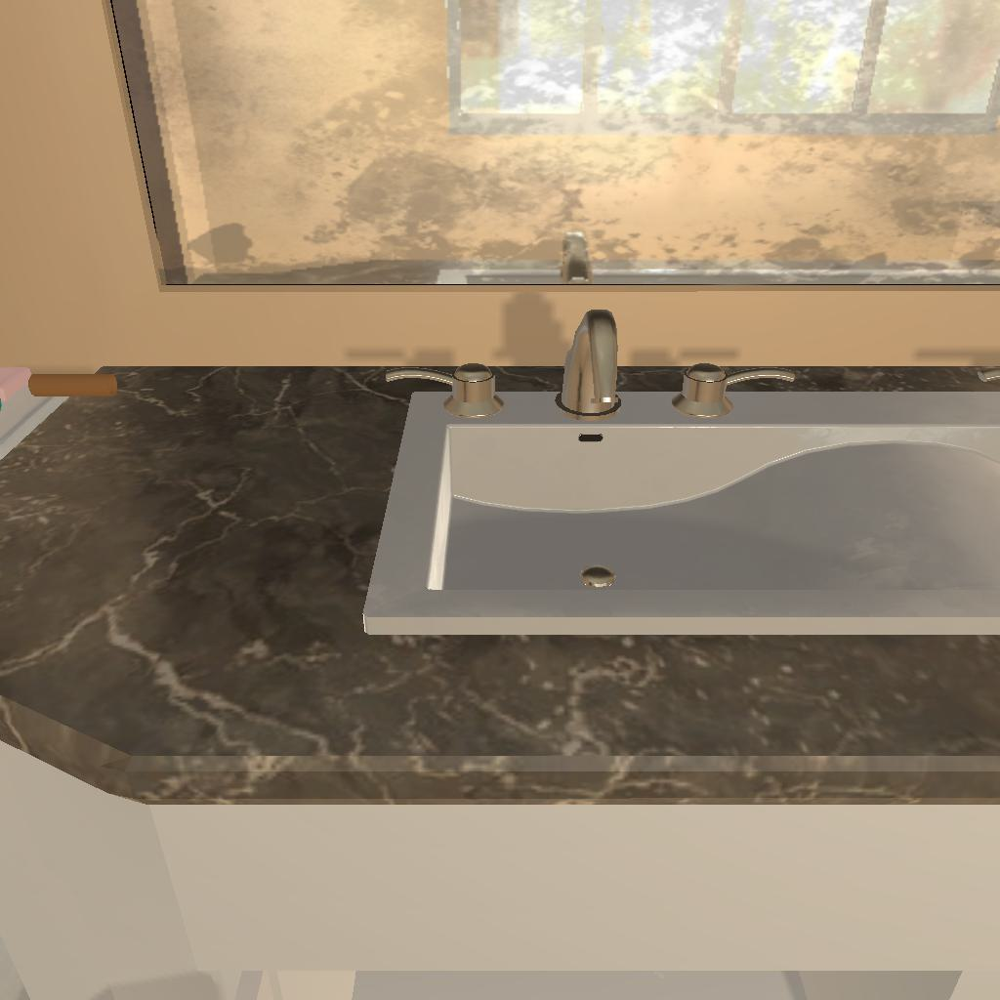

---------------------------------------------------------task: 11---------------------------------------------------------
--------------------------------------------------------------------------------------------------------------------------------------------------------------------
--------------------------------------------------------------------------------------------------------------------------------------------------------------------
Step:--------------------------------------------------------------------------18-------------------------------------------------------------------------------
----------------------------------------
VLM Prompt:
Image1:
Image2:
Image3:
**Instruction**
1. Analyze the provided images to identify all visible household objects and compare the difference between images (e.h. whether the object is opened or not and taken on hand or not), focusing on those relevant to the task description "put a clean soapbar in bathtubbasin."
2. Use the analysis of images and the task hint "The agent must find an object of the desired type, pick it up, go to a sink or a basin, clean the object with a sink or basin, and then find the correct location to place it and put it down there. The agent does not need to use soap bottle or faucet to clean the object, and the agent just needs to do action that is "clean the object with the sink or sink basin"." to answer the question: what is the most reasonable action in the choices for the task description "put a clean soapbar in bathtubbasin"?
3. Decide and write the answer using the template: The answer is: (i): , where i is the real number. If there is no desired object in images, search every place based on **Initial Observation** to find the object. And if no one is exactly correct, choose a similar answer.
**Initial Observation**
You are in the middle of a room. Looking quickly around you, you can see bathtub (1), bathtubbasin (1), toilet (1), cabinet (1-2), countertop (1), sink (1), sinkbasin (1), garbagecan (1)
**Answer Choices**
(1): go to bathtub 1
(2): go to toilet 1
(3): go to cabinet 1
(4): go to sink 1
(5): go to sinkbasin 1
(6): go to garbagecan 1
(7): take faucet 1 from countertop 1
(8): take toiletpaper 1 from countertop 1
(9): take soapbar 1 from countertop 1
(10): take faucet 2 from countertop 1
(11): take cloth 1 from countertop 1
(12): take spraybottle 1 from countertop 1
(13): examine countertop 1
**Answer**
Let's think step by step by following the instructions.
----------------------------------------
----------------------------------------
Original Response:
First, we need to analyze the images to identify all visible household objects. In Image 1, we can see a sink with a faucet, a soap bottle on the countertop, and a garbage can. In Image 2, we can see a bathtub with a crystal-like object inside it. In Image 3, we see a similar view to Image 1 but with a soap bar on the countertop and a toothbrush holder.
Comparing the differences between images, we notice that in Image 3, there is a soap bar present on the countertop, which is relevant to the task description "put a clean soapbar in bathtubbasin."
Using the analysis and the task hint, we understand that the agent must find a soap bar, pick it up, clean it in the sink or basin, and then place it in the bathtubbasin. The agent does not need to use a soap bottle or faucet to clean the object.
Looking at the initial observation and the answer choices, the most reasonable action for the task description would be to take the soap bar from the countertop and then go to the bathtub basin to place it there. However, cleaning the soap bar is not an option listed in the answer choices, but since the task specifies that the agent just needs to do the action "clean the object with the sink or sink basin," we can assume that taking the soap bar involves implicitly cleaning it before placing it in the bathtub basin.
Therefore, the answer is:
(9): take soapbar 1 from countertop 1
----------------------------------------
----------------------------------------
>>> Refine Original VLM Response and Get Pure Action: No action
----------------------------------------
-----------------------------------------------------------------
Running time: 17.21686553955078 seconds
Total Money: 6.183940000000007
-----------------------------------------------------------------
-----------------------------------------------------------------
Text Observation:Nothing happens.
-----------------------------------------------------------------
UNSUCCEED